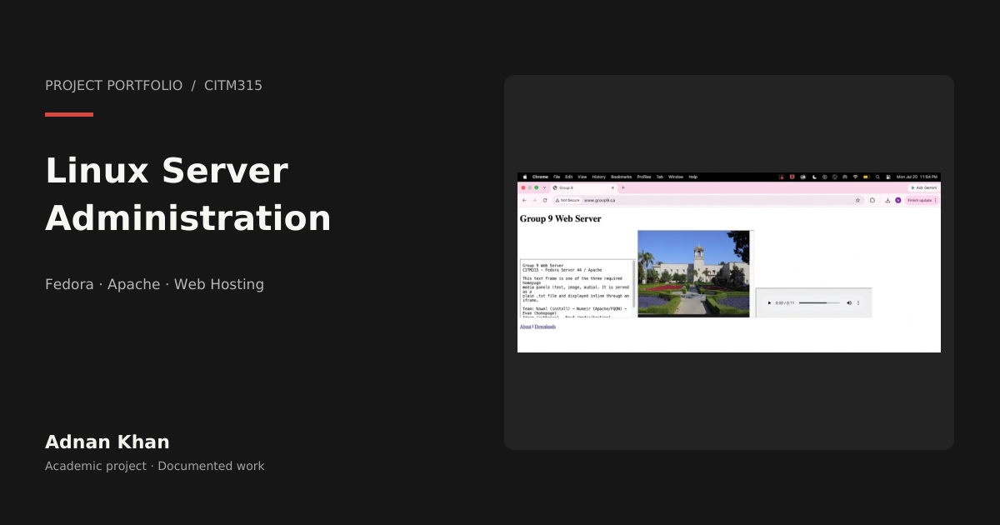
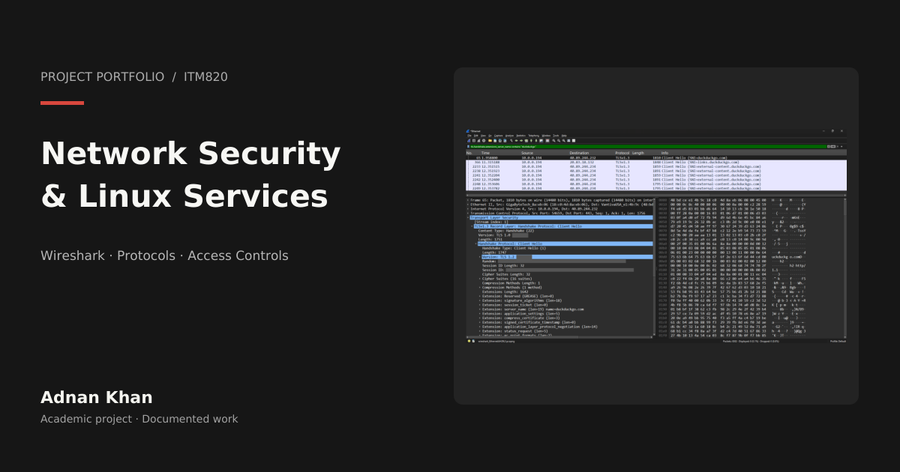
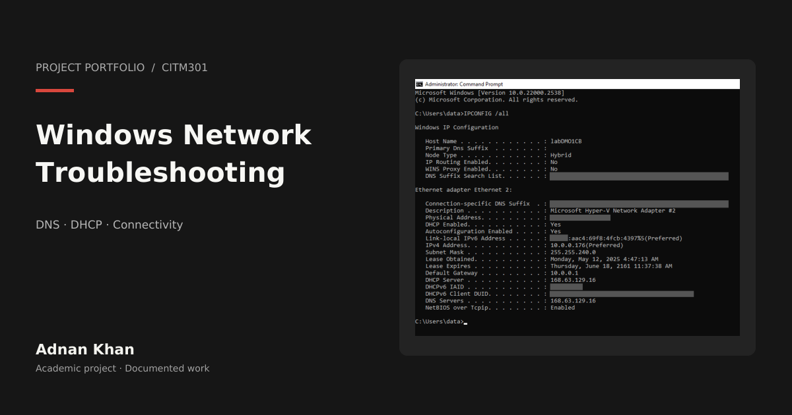
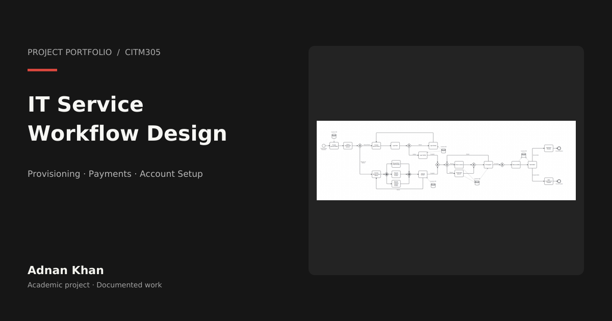
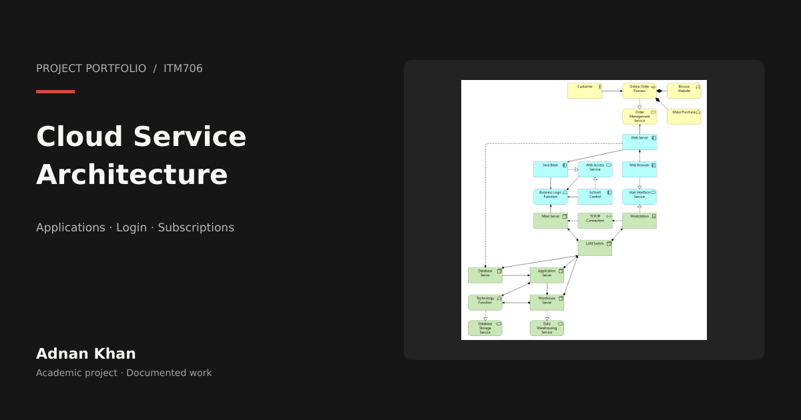
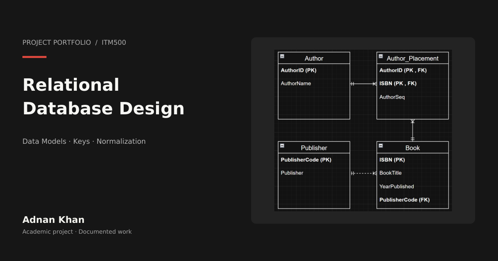
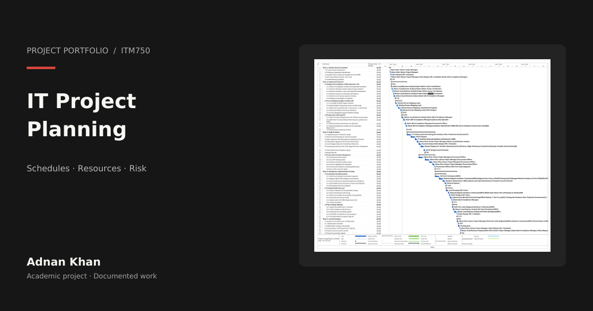
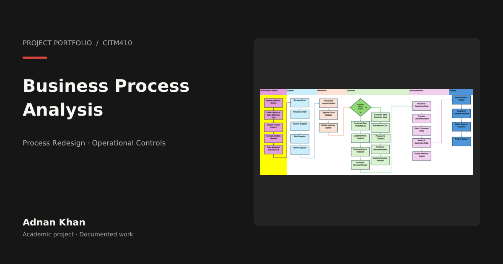

View project01 · CITM315
Fedora Web Server: Linux Administration, Apache & File Delivery
Linux administration • Apache • Server configuration
Practical labs and academic projects in IT support, Linux administration, network security and systems design. Select a project to open its full walkthrough in a new tab.

View projectLinux administration • Apache • Server configuration

View projectNetwork security • Wireshark • Linux services

View projectWindows networking • DNS/DHCP • Troubleshooting

View projectSystems analysis • UML • Service workflows

View projectEnterprise architecture • Cloud services • Systems design

View projectDatabase design • ERD • Data modelling

View projectProject management • Scheduling • Risk planning

View projectBusiness processes • Controls • Systems improvement